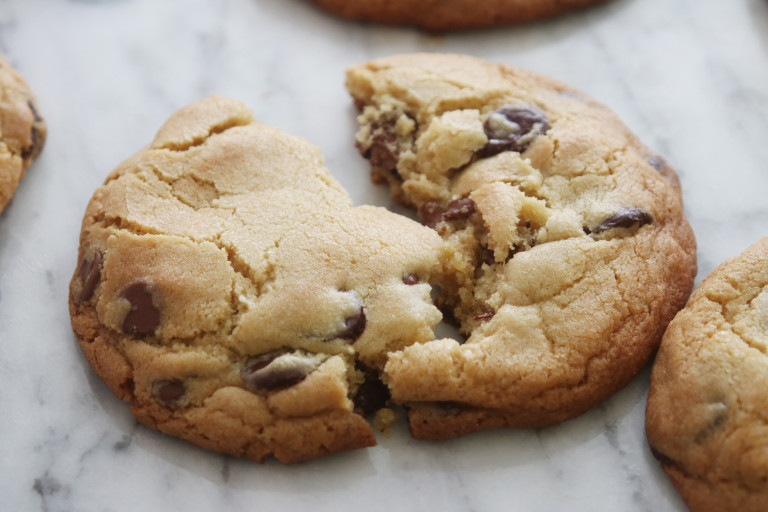

Chocolate Chip Cookies

A classic snack, only invented in 1938. Can you believe?
Ingredients
- 3 cups bread flour
- 1 teaspoon baking powder
- 1/2 teaspoon baking soda
- 1/2 teaspoon kosher salt
- cup unsalted butter chilled and cubed
- 1 cup light brown sugar
- 1 cup granulated sugar
- 2 eggs chilled
- 2 teaspoons pure vanilla extract
- 1 cup bittersweet chocolate chips
- 1/2 cup semisweet chocolate chips
Steps
- In a large bowl, whisk together the flour, baking powder, baking soda and salt. Set aside.
- In the bowl of a stand mixer fitted with the paddle attachment, beat the cold butter on medium speed, about 1 minute. Add the brown sugar and granulated sugar and mix until incorporated. Add the eggs and vanilla. Mix on medium-low speed until the mixture looks separated.
- Turn off the machine and add the dry ingredients. Mix on low speed just until the dough comes together. Turn off the machine and fold in the chocolate chips by hand using a rubber spatula.
- Drop the dough onto a parchment-lined sheet tray in 1-cup mounds. Place the tray in the freezer and freeze for 1 hour.
- Preheat the oven to 375 degrees F.
- Bake straight from the freezer until still slightly under baked in the middle but golden brown around the edges and beginning to brown on top, 20 minutes.
- Cool the cookies on the tray for 5 minutes before cooling completely on a wire rack.